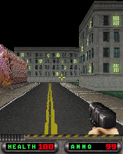

We’d chosen a four-way pad for Duke. The trouble came when that choice turned into an assumption about what the original game could do. We needed to find out whether Duke actually supported walking and turning together.
Four directions were not the whole story.
The 0.1.1 integration had followed the old touch implementation. That told us how the bridge used to work, not whether the game could accept more than one direction. We went into the original key handler and player state to check.DU04
The game kept independent bits for forward, back, left, right and fire. Pressing forward, adding right, releasing right, then releasing forward produced a plain sequence: 1, 9, 1, 0. The original update read movement and yaw in separate branches. Both could take effect during one callback.DU05
Six measured scenarios changed position and heading together in all 36 observed callbacks. The tests reversed the press order, reversed the release order and added fire. Releasing one native input left the others held. The original had supported it all along.DU05
We changed the pad to retain every contact and send their union as original keys. The game decided what those simultaneous cardinal inputs meant. Both the normal controls and the original keypad mode used the behavior we’d just measured.DU04
Duke brought a renderer.

The supplied Duke and Micro3D modules produced this retained 176×220 desktop frame. It is original-runtime host output, not a phone image.
Open the image for the full original view.
DU90The package included its own Micro3D module alongside Duke. When the optional hardware-accelerated class was unavailable, the supplied software fallback could execute. The host work had to provide the interfaces that original code expected, including resource loading, allocation and menu commands. The street, weapon and HUD came from that original path.DU01
The original help also separated turning from strafing, weapon cycling and Quick Look. Quick Look depends on Enemy Alert and a double tap toward a warning. A familiar-looking FPS still had particular feature-phone rules worth keeping.DU03
Recovering the recovery.
One saved checkpoint had its own failure before work could resume from that archive: the old 0.1.0 ZIP ended partway through an SDK file and had no central directory. The recorded recovery salvaged 116 complete entries from local headers, checking their sizes and CRCs. The game and source entries preceding the truncation survived; the missing SDK jar came from the Ashen checkpoint.DU06
The retained host checks cover the first street, movement, weapons, pause and original save reload. They also explain why reports needed a separate executor: the software renderer could occupy the game worker for millions of interpreted instructions. The report button still needed a way to answer.DU02DU07
Duke hadn’t needed a new ability. We’d needed to stop blaming the game for a restriction in the bridge. Reading and testing its own input state gave us a control scheme we could actually defend.DU05
About these records
The measured simultaneous-input result comes from original native player fields on the host. Android framework tests use a separate execution boundary; layout previews reuse a recorded game framebuffer. The chapter’s image is a historical original-runtime host capture. The inspected checkpoint leaves phone feel, audible playback, heat and later levels open for that build. No new game execution was performed for this archive.
The receipts
Selected report lines, investigation notes and owner recollections. Open a receipt for its source and scope.
DU04 / A four-way bridge pad was mistaken for an original limitCheckpoint investigation notes
Source: DukeNukem_3D_Bridge_v0.1.2_PRIVATE_CHECKPOINT.zip / DukeNukem_3D_Bridge_v0.1.2_PRIVATE/TECHNICAL_HANDOFF.txt · selected lines 8–34
Scope: replace shared contact implementation and correct this game's verified simultaneous-direction configuration. Runtime source, original modules, assets, renderer, timer scheduling, original save.dat semantics, audio and report-writer behavior remain unchanged. Report version strings advance to v0.1.2. The v0.1.1 Duke integration selected a four-way pad based on the old touch implementation. That was insufficient evidence of an original-game limitation. DukeCombinedInputAcceptance now delivers actual original key press/releases and reads original native input/player fields without writing guest memory. Six scenarios (forward/back + left/right, reverse key order, forward/turn/fire) changed position and heading simultaneously in 36/36 scheduled native callbacks. Both release orders retained the other original inputs. See evidence and CSV. DukeControls.directions() now explicitly uses withDiagonals(true) WITHOUT separate diagonal codes. This represents two concurrent original cardinals, not replacement diagonal keys or analog control. The exact BREW direction codes remain E031..E034; center OK remains E035; numeric FIRE remains E026. Original numeric, softkey, hardware-button and axis mappings remain unchanged. Both the standard normal panel and game-owned DukeKeypadView obtain the SAME verified directions() spec and instantiate the shared BridgeDigitalPad. The custom original mode retains a complete D-pad beside the numeric cluster. The v1.1.2 pad keeps every contact by stable pointer ID and sends their union. Duplicate native keys remain held until the last contact/source releases. Touch switches/cancel clear touch ownership and retain registered hardware. The original mode-switch UI, geometry, safe areas, stable renderer slot, Android Back cleanup, startup fault capture and reporting are preserved.
DU05 / Position and heading changed togetherCheckpoint investigation notes
Source: DukeNukem_3D_Bridge_v0.1.2_PRIVATE_CHECKPOINT.zip / DukeNukem_3D_Bridge_v0.1.2_PRIVATE/evidence/v0.1.2-native-input-evidence.txt · selected lines 10–30
Original key handler routes separate key-down/up events into an input mask. During the first real 3D level, applet+0x420 points to the input object. Its +4 field retains independent bits: Up=1, Down=2, Left=4, Right=8, Fire=16. Observed Up -> Up+Right -> release Right -> release Up produces 1,9,1,0. Original update at module address 0x11bd18 reads those bits in independent branches. Left/right paths at 0x11bda0 / 0x11bdc0 call the yaw update 0x1120d0. Up/down paths at 0x11bde0 / 0x11be04 feed movement 0x11233c. The original player comes from applet->engine(+0x328)->player(+0xb48). Native yaw is at player+0x34; horizontal coordinates are player+0x48 and player+0x50, as read/ written by the original yaw/movement routines. These fields are observed ONLY. DukeCombinedInputAcceptance verifies forward-right, forward-left, backward-right, backward-left, turn-before-forward and forward-turn-fire on fresh real sessions. All 36/36 observed callbacks changed both position and heading with both native inputs still held. Releasing either direction first preserved the other native input, including fire where configured; final releases cleared the native mask. Frame-level native values are retained in v0.1.2-native-combinations/native-player-frames.csv. This proves original game support for combined cardinals. It does not prove physical Android touch comfort, real phone execution or audible playback.
DU90 / Historical image / Duke Nukem’s original first street, weapon and HUDHistorical host capture
Source: DukeNukem_3D_Bridge_v0.1.2_PRIVATE/evidence/verified/03_original_3d_gameplay.png
Reviewed original game image; no personal interface or image metadata. This is a retained desktop original-runtime capture, not a new phone screenshot.
Unchanged historical game framebuffer. Source member: DukeNukem_3D_Bridge_v0.1.2_PRIVATE/evidence/verified/03_original_3d_gameplay.png Image SHA-256: 9e7f20bf7e0e48b07d45b47078ee22b3824f76a562b28433d8480d5e5412951a The supplied Duke and Micro3D modules produced this retained 176×220 desktop frame. It is original-runtime host output, not a phone image.
DU01 / The original supplied Micro3D engine executesCheckpoint investigation notes
Source: DukeNukem_3D_Bridge_v0.1.2_PRIVATE_CHECKPOINT.zip / DukeNukem_3D_Bridge_v0.1.2_PRIVATE/evidence/v0.1.0-TECHNICAL_HANDOFF.txt · selected lines 1–3
Original package: DukeNukem3D_114.rar. Main class 0x01034B16. Original duke3d.mod at guest 0x00100000; original imicro3d.mod at 0x00300000, class 0x010292C3, version 3.0.0 C. Each module receives BREW system tables at base-8/base-4. Original micro engine CreateInstance is invoked on a separate nested stack, restoring outer CPU state. Hardware accelerated optional class 0x0101F0AA is unavailable; original supplied Micro3D fallback executes. Foundation: clean BioShock v0.2.0 ARM/Thumb CPU/BREW services, with RE Genesis visual hierarchy. Duke requires caller-buffer IShell.LoadResData with query mode -1 and a size pointer; BAR selection follows original filename arguments. IMalloc allocation/release and wide formatting were added from actual module calling sequences. QCELP factory class 0x01005503 uses the preserved media ABI. System DrawText supplies a small host font; Duke menus, mission text, HUD and assets retain original bitmap fonts. IMenuCtl is a host service implementing the original title, item text/IDs, selection and rendering; EVT_COMMAND 0x0200 returns the original item ID to original native logic. Native Quit is item 0; Cancel is item 1. No executable or resource patches.
DU03 / Original control helpOriginal game help
Source: DukeNukem_3D_Bridge_v0.1.2_PRIVATE_CHECKPOINT.zip / DukeNukem_3D_Bridge_v0.1.2_PRIVATE/evidence/original-controls.txt · selected lines 1–19
Duke Nukem Mobile 3D Version $VER$ -- Controls -- Control pad - Movement 5 & OK - Fire 1 & 3 - Previous/next weapon 4 & 6 - Turn left/right 2 & 8 - Move forward/back 7 & 9 - Strafe left/right Feature Information: Enemy Alert causes blinking arrows to appear when enemies are nearby. Quick Look allows you to instantly turn towards an enemy when red arrows are flashing by tapping left or right twice. Note: Quick Look is only functional if Enemy Alert is also enabled.
DU06 / The earlier checkpoint itself had to be recoveredCheckpoint investigation notes
Source: DukeNukem_3D_Bridge_v0.1.2_PRIVATE_CHECKPOINT.zip / DukeNukem_3D_Bridge_v0.1.2_PRIVATE/evidence/v0.1.1-TECHNICAL_HANDOFF.txt · selected lines 53–58
Base archive recovery: original v0.1.0 ZIP lacks its central directory and ends partway through its SDK android.jar. 116 complete entries were recovered using local headers and verified uncompressed sizes + CRC32. Game/source/signing/tool entries preceding the truncation were intact. Only SDK android.jar was supplied from the already-attached Ashen v0.1.3 checkpoint. Baseline SHA manifests and the recovery inventory are kept under evidence/. Final archive must pass testzip.
DU02 / Original audio and keeping reports away from a busy rendererCheckpoint investigation notes
Source: DukeNukem_3D_Bridge_v0.1.2_PRIVATE_CHECKPOINT.zip / DukeNukem_3D_Bridge_v0.1.2_PRIVATE/evidence/v0.1.0-TECHNICAL_HANDOFF.txt · selected lines 5–7
The 31 sound.bar resources comprise 2 exact MIDI payloads and 29 QCELP payloads decoded to original-rate mono 8 kHz signed 16-bit PCM. Asset names hash the exact native-provided bytes. Android MediaPlayer completion/start/error notifications enter the native event worker. Host tests exercise callbacks using actual asset durations, not audio playback. Detailed diagnostics OFF for gameplay. The original software 3D renderer can execute millions of interpreted ARM instructions per callback; desktop virtual-clock timings are not Android performance. Pixel delivery uses changed revisions. All native CPU/timers/input/audio callbacks and save operations share one worker. Only due scheduled ticks pump timers. Report assembly and public file writing are separate executors, reading the last completed result; report output remains usable while the game worker is occupied.
DU07 / The original opening level and native behaviors on the hostCheckpoint investigation notes
Source: DukeNukem_3D_Bridge_v0.1.2_PRIVATE_CHECKPOINT.zip / DukeNukem_3D_Bridge_v0.1.2_PRIVATE/evidence/v0.1.0-README_FIRST.txt · selected lines 10–14
The original game may show its Quit? prompt after a real background suspend/resume. Select Cancel to continue. Bridge MENU dialogs pause only host scheduling; they do not inject native suspend events. Native game progress/settings use original save.dat; this is not an invented mid-mission save-state system. HOST VERIFIED: original title/menu, difficulty, mission briefing, supplied original Micro3D engine drawing the first 3D scene, movement/turn/strafe, firing with ammo consumption, previous/next weapon, Quit/Cancel, suspend/resume, 200 additional gameplay callbacks including original death behavior, original MIDI/QCELP audio payloads and modeled completion notifications, exact original save bytes imported by a fresh applet. 23 production hardware mappings checked. APK compiled, aligned, signed and original asset bytes compared. PHONE TEST PENDING: touch/layout within actual Samsung system UI, audible Android playback, device speed and heat, and later campaign levels. No phone was connected to this build environment.